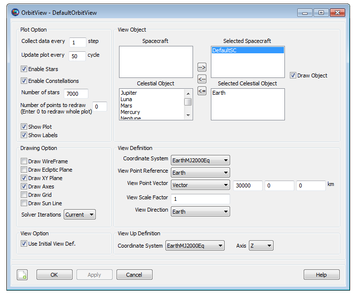

OrbitView
OrbitView — A user-defined resource that plots 3-Dimensional trajectories
Description
The OrbitView resource allows you to plot trajectories of a spacecraft or a celestial body. GMAT also allows you to plot trajectories associated with multiple spacecrafts or celestial bodies. You can create multiple OrbitView resources by using either the GUI or script interface of GMAT. OrbitView plots also come with multiple options that allow you to customize the view of spacecraft’s trajectories. See the Fields section below for detailed discussion on available plotting and drawing options.
GMAT also provides the option of when to start and stop plotting spacecraft’s trajectories to an OrbitView resource through the Toggle On/Off command. See the Remarks section below for detailed discussion of the interaction between an OrbitView resource and the Toggle command. GMAT’s Spacecraft, SolarSystem and OrbitView resources also interact with each other throughout the entire mission duration. Discussion of the interaction between these resources is also mentioned in the Remarks section.
See Also: Toggle, Spacecraft, SolarSystem, CoordinateSystem, Color
Fields
| Field | Description | ||||||||||||
|---|---|---|---|---|---|---|---|---|---|---|---|---|---|
| Add | This field allows you to add a Spacecraft, Celestial body, Libration Point, or Barycenter resource to a plot. When creating a plot, the Earth is added as a default body and may be removed at any time. You can add a Spacecraft, Celestial body, Libration Point, or Barycenter to a plot by using the name used to create the resource. The GUI's Selected field is the equivalent of the script's Add field. In the event of no Add command or no resources in the Selected field, GMAT should run without the OrbitView plot and a warning message will be displayed in the message window. The following warning message is sufficient: The OrbitView named "DefaultOrbitView" will be turned off. No SpacePoints were added to plot. This field cannot be modified in the Mission Sequence.
| ||||||||||||
| Axes | Allows you to draw the Cartesian axis system associated with the coordinate system selected under the CoordinateSystem field of an OrbitView plot. This field cannot be modified in the Mission Sequence.
| ||||||||||||
| EclipticPlane | Allows you to draw a grid representing the Ecliptic Plane in an OrbitView plot. This field cannot be modified in the Mission Sequence.
| ||||||||||||
| CoordinateSystem | Allows you to select which coordinate system to use to draw the plot data. A coordinate system is defined as an origin and an axis system. The CoordinateSystem field allows you to determine the origin and axis system of an OrbitView plot. See the CoordinateSystem resource fields for information of defining different types of coordinate systems. This field cannot be modified in the Mission Sequence.
| ||||||||||||
| DataCollectFrequency | Allows you to define how data is collected for plotting. It is often inefficient to draw every ephemeris point associated with a trajectory. Often, drawing a smaller subset of the data still results in smooth trajectory plots, while executing more quickly. The DataCollectFrequency is an integer that represents how often to collect data and store for plotting. If DataCollectFrequency is set to 10, then data is collected every 10 integration steps. This field cannot be modified in the Mission Sequence.
| ||||||||||||
| DrawObject | The DrawObject field allows you the option of displaying Spacecraft or Celestial resources on the OrbitView plot. This field cannot be modified in the Mission Sequence.
| ||||||||||||
| EnableConstellations | Allows you the option of displaying star constellations on the OrbitView Plot. This field cannot be modified in the Mission Sequence.
| ||||||||||||
| EnableStars | This field gives you the option of displaying stars on the OrbitView Plot. When the EnableStars field is turned off, then EnableConstellations field is automatically diabled. This field cannot be modified in the Mission Sequence.
| ||||||||||||
| Grid | Allows you to draw a grid representing the longitude and latitude lines on the celestial bodies added to an OrbitView plot. This field cannot be modified in the Mission Sequence.
| ||||||||||||
| Maximized | Allows you to maximize the OrbitView plot window. This field cannot be modified in the Mission Sequence.
| ||||||||||||
| NumPointsToRedraw | When NumPointsToRedraw field is set to zero, all ephemeris points are drawn. When NumPointsToRedraw is set to a positive integer, say 10 for example, only the last 10 collected data points are drawn. See DataCollectFrequency for explanation of how data is collected for an OrbitView plot. This field cannot be modified in the Mission Sequence.
| ||||||||||||
| RelativeZOrder | Allows you to select which OrbitView window to display first on the screen. The OrbitViewPlot with lowest RelativeZOrder value will be displayed last while OrbitViewPlot with highest RelativeZOrder value will be displayed first. This field cannot be modified in the Mission Sequence.
| ||||||||||||
| ShowPlot | Allows you to turn off a plot for a particular run, without deleting the plot, or removing it from the script. If you select true, then the plot will be shown. If you select false, then the plot will not be shown. This field cannot be modified in the Mission Sequence.
| ||||||||||||
| ShowLabels | Allows you to turn on or off spacecraft and celestial body Object labels. If you select true, then spacecraft and celestial body object labels will show up in orbit view plot. If you select false, then spacecraft and celestial body labels will not be shown in the orbit plot. This field cannot be modified in the Mission Sequence.
| ||||||||||||
| Size | Allows you to control the display size of OrbitViewPlot window. First value in [0 0] matrix controls horizonal size and second value controls vertical size of OrbitViewPlot display window. This field cannot be modified in the Mission Sequence.
| ||||||||||||
| SolverIterations | This field determines whether or not data associated with perturbed trajectories during a solver (Targeter, Optimize) sequence is plotted to OrbitView. When SolverIterations is set to All, all perturbations/iterations are plotted to an OrbitView plot. When SolverIterations is set to Current, only current solution is plotted to an OrbitView. When SolverIterations is set to None, this shows only final solution after the end of an iterative process and draws only final trajectory to an OrbitView plot.
| ||||||||||||
| StarCount | Allows you to enter the number of stars that need to be displayed in an OrbitView plot. This field cannot be modified in the Mission Sequence.
| ||||||||||||
| SunLine | Allows you to draw a line that starts at the center of central body and points towards the Sun. This field cannot be modified in the Mission Sequence.
| ||||||||||||
| UpdatePlotFrequency | This field lets you specify how often to update an OrbitView plot is updated with new data collected during the process of propagating spacecraft and running a mission. Data is collected for a plot according to the value defined by DataCollectFrequency. An OrbitView plot is updated with the new data, according to the value set in UpdatePlotFrequency. If UpdatePlotFrequency is set to 10 and DataCollectFrequency is set to 2, then the plot is updated with new data every 20 (10*2) integration steps. This field cannot be modified in the Mission Sequence.
| ||||||||||||
| UpperLeft | Allows you to pan the OrbitView plot window in any direction. First value in [0 0] matrix helps to pan the OrbitView window horizontally and second value helps to pan the window vertically. This field cannot be modified in the Mission Sequence.
| ||||||||||||
| UseInitialView | This field lets you control the view of an OrbitView plot between multiple runs of a mission sequence. The first time a specific OrbitView plot is created, GMAT will automatically use the view as defined by the fields associated with View Definition, View Up Direction, and View Option. However, if you change the view using the mouse, GMAT will retain this view upon rerunning the mission as long as UseInitialView is set to false. If UseInitialView is set to true, the view for an OrbitView plot will be returned to the view defined by the initial settings. This field cannot be modified in the Mission Sequence.
| ||||||||||||
| ViewDirection | Allows you to select the direction of view in an OrbitView plot. You can specify the view direction by choosing a resource to point at such as a Spacecraft, Celestial body, Libration Point, or Barycenter. Alternatively, you can also specify a vector of the form [x y z]. If the user specification of ViewDirection, ViewPointReference, and ViewPointVector results in a zero vector, GMAT uses [0 0 10000] for ViewDirection. This field cannot be modified in the Mission Sequence.
| ||||||||||||
| ViewPointReference | This optional field allows you to change the reference point from which ViewPointVector is measured. ViewPointReference defaults to the origin of the coordinate system for the plot. A ViewPointReference can be any Spacecraft, Celestial body, Libration Point, or Barycenter. This field cannot be modified in the Mission Sequence.
| ||||||||||||
| ViewPointVector | The product of ViewScaleFactor and ViewPointVector field determines the view point location with respect to ViewPointReference. ViewPointVector can be a vector, or any of the following resources: Spacecraft, Celestial body, Libration Point, or Barycenter. The location of the view point in three-dimensional space is defined as the vector addition of ViewPointReference and the vector defined by product of ViewScaleFactor and ViewPointVector in the coordinate system chosen by you. This field cannot be modified in the Mission Sequence.
| ||||||||||||
| ViewScaleFactor | This field scales ViewPointVector before adding it to ViewPointReference. The ViewScaleFactor allows you to back away from an object to fit in the field of view. This field cannot be modified in the Mission Sequence.
| ||||||||||||
| ViewUpAxis | This field lets you define which axis of the ViewUpCoordinateSystem field will appear as the up direction in an OrbitView plot. See the comments under ViewUpCoordinateSystem for more details of fields used to determine the up direction in an OrbitView plot. This field cannot be modified in the Mission Sequence.
| ||||||||||||
| ViewUpCoordinateSystem | The ViewUpCoordinateSystem and ViewUpAxis fields are used to determine which direction appears as up in an OrbitView plot and together with the fields associated the the View Direction, uniquely define the view. The fields associated with the View Definition allows you to define the point of view in three-dimensional space, and the direction of the line of sight. However, this information alone is not enough to uniquely define the view. We also must provide how the view is oriented about the line of sight. This is accomplished by defining what direction should appear as the up direction in the plot and is configured using the ViewUpCoordinateSystem field and the ViewUpAxis field. The ViewUpCoordinateSystem allows you to select a coordinate system to define the up direction. Most of the time this system will be the same as the coordinate system chosen under the CoordinateSystem field. This field cannot be modified in the Mission Sequence.
| ||||||||||||
| WireFrame | When the WireFrame field is set to On, celestial bodies are drawn using a wireframe model. When the WireFrame field is set to Off, then celestial bodies are drawn using a full map. This field cannot be modified in the Mission Sequence.
| ||||||||||||
| XYPlane | Allows you to draw a grid representing the XY-plane of the coordinate system selected under the CoordinateSystem field of the OrbitView plot. This field cannot be modified in the Mission Sequence.
|
GUI
The figure below shows the default settings for the OrbitView resource:
|  |
OrbitView Window Mouse Controls
The list of controls in the table below helps you navigate through the OrbitView graphics window. "Left" and "Right" designate the mouse button which have to be pressed.
| Control | Description |
|---|---|
| Left Drag | Helps to change camera orientation. Camera orientation can be changed in Up/Down/Left/Right directions. |
| Right Drag | Helps to zoom in and out of the graphics window. Moving the cursor in Up direction leads to zoom out of the graphics window. Moving the cursor in Down direction helps to zoom into the graphics window. |
| Shift+Right Drag | Helps to adjust the Field of View. |
Remarks
Behavior when using OrbitView Resource & Toggle Command
The OrbitView resource plots spacecraft’s trajectory at each propagation step of the entire mission duration. If you want to report data to an OrbitView plot at specific points in your mission, then a Toggle On/Off command can be inserted into the mission sequence to control when OrbitView is to plot a given trajectory. When Toggle Off command is issued for an OrbitView, no trajectory is drawn until a Toggle On command is issued. Similarly, when a Toggle On command is used, trajectory is plotted at each integration step until a Toggle Off command is used.
Create Spacecraft aSat
Create Propagator aProp
Create OrbitView anOrbitView
anOrbitView.Add = {aSat, Earth}
BeginMissionSequence
Toggle anOrbitView Off
Propagate aProp(aSat) {aSat.ElapsedDays = 2}
Toggle anOrbitView On
Propagate aProp(aSat) {aSat.ElapsedDays = 4}Behavior when using OrbitView, Spacecraft and SolarSystem Resources
Spacecraft resource contains information about spacecraft’s orbit. Spacecraft resource interacts with OrbitView throughout the entire mission duration. The trajectory data retrieved from the spacecraft is what gets plotted at each propagation step of the entire mission duration. Similarly, the sun and all other planets available under the SolarSystem resource may be plotted or referenced in the OrbitView resource as well.
Behavior when reporting data in Iterative Processes
GMAT allows you to specify how trajectories are plotted during iterative processes such as differential correction or optimization. The SolverIterations field of OrbitView resource supports 3 options which are described in the table below:
| SolverIterations options | Description |
|---|---|
| Current | Shows only current iteration/perturbation in an iterative process and plots current trajectory. |
| All | Shows all iterations/perturbations in an iterative process and plots all perturbed trajectories. |
| None | Shows only the final solution after the end of an iterative process and plots only that final trajectory. |
Behavior when plotting multiple spacecrafts
GMAT allows you to plot trajectories of any number of spacecrafts when using the OrbitView resource. The initial epoch of all the spacecrafts must be same in order to plot the trajectories. If initial epoch of one of the spacecrafts does not match with initial epoch of other spacecrafts, then GMAT throws in an error alerting you that there is a coupled propagation error mismatch between the spacecrafts. GMAT also allows you to propagate trajectories of spacecrafts using any combination of the propagators that you may create.
Below is an example script snippet that shows how to plot trajectories of multiple spacecrafts that use different propagators:
Create Spacecraft aSat aSat2 aSat3
aSat2.INC = 45.0
aSat3.INC = 90.0
aSat3.SMA = 9000
Create Propagator aProp
Create Propagator bProp
Create OrbitView anOrbitView anOrbitView2
anOrbitView.Add = {aSat, aSat2, Earth}
anOrbitView2.Add = {aSat3, Earth}
BeginMissionSequence
Propagate aProp(aSat, aSat2) bProp(aSat3) {aSat.ElapsedSecs = 12000.0}OrbitView View Definition Controls
GMAT is capable of drawing orbit plots that allow you to visualize the motion of spacecraft and celestial bodies throughout the mission sequence. Here we discuss the options you can use in setting up and viewing Orbit plots. You can choose many properties including the coordinate system of the orbit view plot and the view location and direction from where visualizations can be seen. The script snippet below shows how to create OrbitView resource that includes key view definition controls fields as well. Detailed definitions of all fields for OrbitView resource can be found in Fields section.
Create OrbitView PlotName
PlotName.CoordinateSystenm = CoordinateSystemName
PlotName.Add = [SpacecraftName, BodyName, ...
LibrationPoint, Barycenter]
PlotName.ViewPointReference = [ObjectName, VectorName]
PlotName.ViewPointVector = [ObjectName, VectorName]
PlotName.ViewDirection = [ObjectName, VectorName]
PlotName.ViewScaleFactor = [Real Number]
PlotName.ViewUpCoordinateSystem = CoordinateSystemName
PlotName.ViewUpAxis = [X,-X,Y,-Y,Z,-Z];You can specify the view location and direction of OrbitView plot object by using the ViewPointReference, ViewPointVector, ViewDirection, ViewUpCoordinateSystem and ViewUpAxis fields. Figure below shows a graphical definition of ViewPointReference, ViewPointVector, and ViewDirection fields and how they determine the actual view location and view direction. You can supply ViewPointReference, ViewPointVector and ViewDirection fields by either giving a vector in the format [x y z] or by specifying an object name. If a vector is given for one of the quantities, then we simply use it in its appropriate place in the computations below. If an object is given, we must determine the vector associated with it. The rest of this section is devoted in determining ViewPointReference, ViewPointVector and ViewDirection fields if you specify an object.
 |
ViewPointReference field defines the point from which ViewPointVector is measured. If an object is given for ViewPointReference field, i.e. when you have the following in the sample script:
MyOrbitViewPlot.CoordinateSystenm = MyCoordSys
MyOrbitViewPlot.ViewPointReference = ViewRefObjectthen we need to determine rr as illustrated in above figure. If ViewRefObject is the same as the origin of MyCoordSys, then rr = [0 0 0]. Otherwise rr is the cartesian position of ViewPointReference in MyCoordSys.
 |
ViewPointVector field points from ViewPointReference (rr) in the direction of the view point location. If an object is given for ViewPointVector field, i.e. you have the following in the sample script:
MyOrbitViewPlot.CoordinateSystenm = MyCoordSys
MyOrbitViewPlot.ViewPointVector = ViewPointObjectthen we need to determine rv as illustrated in above figure by using the coordinate system conversion routine to calculate the following:
 |
We now know everything to calculate the location of the view point in the desired coordinate system. From inspection of the above figure, we see that the relation is:
 |
Now that we know the view point location, we need to determine the ViewDirection: rd as illustrated in above figure. If a vector was specified for ViewDirection field, then no computations are required. However, if an object was given as shown in the following sample script:
MyOrbitViewPlot.CoordinateSystenm = MyCoordSys
MyOrbitViewPlot.ViewDiection = ViewDirectionObjectthen we calculate rd from the following:
 |
Note that ViewDirection vector rd must not be zero vector [0 0 0].
ViewUpCoordinateSystem and ViewUpAxis fields are used to determine which direction appears as up in an OrbitView plot. Most of the time, coordinate system chosen under ViewUpCoordinateSystem field will be the same as the coordinate system selected under the CoordinateSystem field. ViewUpAxis field allows you to define which axis of the ViewUpCoordinateSystem field will appear as the up direction in an orbit plot.
Below are some examples that show how to generate OrbitView plots using different View Definition Controls configurations:
Earth Inertial view with spacecraft: This example shows orbit view plot with Earth and a spacecraft. Since ViewPointReference field is set to an object (i.e. Earth), hence ViewPointRef vector in above figure is [0 0 0] in EarthMJ2000Eq coordinate system. The ViewPointVector field is set to a vector ( i.e. set to [0 0 40000] ). This means that the view is from 40000 km above the Earth's equatorial plane on the z-axis of the EarthMJ2000Eq coordinate system. The view direction (specified in ViewDirection field) is towards the earth.
Create Spacecraft aSat
Create Propagator aProp
Create OrbitView anOrbitView
anOrbitView.Add = {aSat, Earth}
anOrbitView.CoordinateSystem = EarthMJ2000Eq
anOrbitView.ViewPointReference = Earth
anOrbitView.ViewPointVector = [ 0 0 40000 ]
anOrbitView.ViewDirection = Earth
anOrbitView.ViewScaleFactor = 1
anOrbitView.ViewUpCoordinateSystem = EarthMJ2000Eq
anOrbitView.ViewUpAxis = Z
BeginMissionSequence
Propagate aProp(aSat) {aSat.ElapsedDays = 1}Earth Inertial view with spacecraft and Luna: This example shows orbit view plot with Earth, spacecraft and Moon. Note ViewPointReference field is set to an object (i.e. Earth), hence ViewPointRef vector in above figure = [0 0 0] in EarthMJ2000Eq coordinate system. ViewPointVector field is still set to a vector ( i.e. set to [0 0 500000] ). This means that the view is from 500000 km above the Earth's equatorial plane on the z-axis of the EarthMJ2000Eq coordinate system. ViewDirection field defines the view direction which is set towards the earth.
Create Spacecraft aSat
Create Propagator aProp
Create OrbitView anOrbitView
anOrbitView.Add = {aSat, Earth, Luna}
anOrbitView.CoordinateSystem = EarthMJ2000Eq
anOrbitView.ViewPointReference = Earth
anOrbitView.ViewPointVector = [ 0 0 500000 ]
anOrbitView.ViewDirection = Earth
anOrbitView.ViewScaleFactor = 1
anOrbitView.ViewUpCoordinateSystem = EarthMJ2000Eq
anOrbitView.ViewUpAxis = Z
BeginMissionSequence
Propagate aProp(aSat) {aSat.ElapsedDays = 5}View of spacecraft from Luna in Earth inertial frame: This example of an orbit view plot shows spacecraft as viewed from Luna orbiting around Earth in an inertial reference frame. ViewPointReference field is set to an object (i.e. Earth), hence ViewPointRef vector is [0 0 0] in EarthMJ2000Eq coordinate system. This time ViewPointVector field is set to an object (i.e. Luna ). This means that the spacecraft will be seen from the vantage point of Luna. Note that ViewDirection field is set to spacecraft (aSat). This means that view direction as seen from Luna is towards the spacecraft. After you run this example, re-run this example but this time with ViewScaleFactor field set to 2 and see what happens. You'll notice that ViewScaleFactor simply scales ViewPointVector field.
Create Spacecraft aSat
Create Propagator aProp
Create OrbitView anOrbitView
anOrbitView.Add = {aSat, Earth, Luna}
anOrbitView.CoordinateSystem = EarthMJ2000Eq
anOrbitView.ViewPointReference = Earth
anOrbitView.ViewPointVector = Luna
anOrbitView.ViewDirection = aSat
anOrbitView.ViewScaleFactor = 1
anOrbitView.ViewUpCoordinateSystem = EarthMJ2000Eq
anOrbitView.ViewUpAxis = Z
BeginMissionSequence
Propagate aProp(aSat) {aSat.ElapsedDays = 5}View towards Luna from Earth as spacecraft orbits around Luna in inertial frame: This example of an orbit view plot shows view of Luna from vantage point of Earth as a spacecraft orbits around Luna. ViewPointReference field is set to an object (i.e. Luna), hence ViewPointRef vector in above figure is [0 0 0] in LunaMJ2000Eq coordinate system. ViewPointVector field is set to an object (i.e. Earth ). This means that the camera or vantage point is located at Earth. ViewDirection field is also set to an object (i.e. Luna). This means that view direction as seen from Earth is towards Luna.
Create Spacecraft aSat
Create CoordinateSystem LunaMJ2000Eq
LunaMJ2000Eq.Origin = Luna
LunaMJ2000Eq.Axes = MJ2000Eq
aSat.CoordinateSystem = LunaMJ2000Eq
aSat.SMA = 7300
aSat.ECC = 0.4
aSat.INC = 90
aSat.RAAN = 270
aSat.AOP = 315
aSat.TA = 180
Create ForceModel aFM
aFM.CentralBody = Luna
aFM.PointMasses = {Luna}
Create Propagator aProp
aProp.FM = aFM
Create OrbitView anOrbitView
anOrbitView.Add = {aSat, Luna, Earth}
anOrbitView.CoordinateSystem = LunaMJ2000Eq
anOrbitView.ViewPointReference = Luna
anOrbitView.ViewPointVector = Earth
anOrbitView.ViewDirection = Luna
anOrbitView.ViewScaleFactor = 1;
anOrbitView.ViewUpCoordinateSystem = LunaMJ2000Eq;
anOrbitView.ViewUpAxis = Z;
BeginMissionSequence
Propagate aProp(aSat) {aSat.ElapsedDays = 5}View towards spacecraft1 from spacecraft2 in inertial frame: This example of an orbit view plot shows spacecraft1 (aSat1) being viewed from spacecraft2 (aSat2) as they move in inertial reference frame. ViewPointReference field is set to an object (i.e. Earth), hence ViewPointRef vector in above figure is [0 0 0] in EarthMJ2000Eq coordinate system. ViewPointVector field is set to an object (i.e. aSat2 ) and ViewDirection field is also set to an object (i.e. aSat1). This means that aSat1 will be viewed from the vantage point of aSat2.
Create Spacecraft aSat aSat2
aSat2.X = 19500
aSat2.Z = 10000
Create Propagator aProp
Create OrbitView anOrbitView
anOrbitView.Add = {aSat, aSat2, Earth,}
anOrbitView.CoordinateSystem = EarthMJ2000Eq
anOrbitView.ViewPointReference = Earth
anOrbitView.ViewPointVector = aSat2
anOrbitView.ViewDirection = aSat
anOrbitView.ViewScaleFactor = 1.0
anOrbitView.ViewUpCoordinateSystem = EarthMJ2000Eq
anOrbitView.ViewUpAxis = Z
BeginMissionSequence
Propagate aProp(aSat, aSat2){aSat.ElapsedSecs = 12000.0}Orbit view plot of Sun-Earth-Moon L1 Rotating System: This example of an orbit view plot shows the Earth and spacecraft in the Sun-Earth-Moon rotating coordinate system. ViewPointReference field is set to an object (i.e. ESL1), hence ViewPointRef vector in above figure is [0 0 0] in SunEarthMoonL1 rotating coordinate system. ViewPointVector field is set to a vector (i.e. [0 0 30000] ). This means that the view is taken from 30000 km above the SunEarthMoonL1 coordinate system's XY plane on the z-axis of the SunEarthMoonL1 coordinate system. ViewDirection field is also set to an object (i.e. ESL1). This means that view direction as seen from 30000 km above the SunEarthMoonL1 coordinate system's XY plane is towards ESL1. Note that in this example, ViewScaleFactor is set to 25. This simply scales or amplifies ViewPointVector field 25 times its original value.
Create Spacecraft aSat
GMAT aSat.DateFormat = UTCGregorian;
GMAT aSat.Epoch = '01 Apr 2013 00:00:00.000'
GMAT aSat.CoordinateSystem = EarthMJ2000Eq
GMAT aSat.DisplayStateType = Cartesian
GMAT aSat.X = 1429457.8833484
GMAT aSat.Y = 147717.32846679
GMAT aSat.Z = -86529.655549364
GMAT aSat.VX = -0.037489820883615
GMAT aSat.VY = 0.32032521614858
GMAT aSat.VZ = 0.15762889268226
Create Barycenter EarthMoonBarycenter
GMAT EarthMoonBarycenter.BodyNames = {Earth, Luna}
Create LibrationPoint ESL1
GMAT ESL1.Primary = Sun
GMAT ESL1.Secondary = EarthMoonBarycenter
GMAT ESL1.Point = L1
Create ForceModel aFM
aFM.CentralBody = Earth
aFM.PointMasses = {Luna, Sun}
Create Propagator aProp
aProp.FM = aFM
Create CoordinateSystem SunEarthMoonL1
GMAT SunEarthMoonL1.Origin = ESL1
GMAT SunEarthMoonL1.Axes = ObjectReferenced
GMAT SunEarthMoonL1.XAxis = R
GMAT SunEarthMoonL1.ZAxis = N
GMAT SunEarthMoonL1.Primary = Sun
GMAT SunEarthMoonL1.Secondary = EarthMoonBarycenter
Create OrbitView anOrbitView
anOrbitView.Add = {aSat, Earth, Sun}
anOrbitView.CoordinateSystem = SunEarthMoonL1
anOrbitView.ViewPointReference = ESL1
anOrbitView.ViewPointVector = [ 0 0 30000 ]
anOrbitView.ViewDirection = ESL1
anOrbitView.ViewScaleFactor = 25
anOrbitView.ViewUpCoordinateSystem = SunEarthMoonL1
anOrbitView.ViewUpAxis = Z
BeginMissionSequence
Propagate aProp(aSat) {aSat.ElapsedDays = 15}Behavior when using View Definition panel of OrbitView Resource
Currently in OrbitView resource’s View Definition panel, fields like ViewPointReference, ViewPointVector and ViewDirection are initialized but not dynamically updated during a mission run. OrbitView resource’s View Definition panel sets up geometry at initial epoch and then mouse controls geometry of the simulation from that point on.
Spacecraft Model Considerations in GMAT's OrbitView
GMAT displays spacecraft models by reading model data from 3D Studio files describing the spacecraft shape and colors. These files have the file extension .3ds, and are generally called 3ds files. 3ds files contain data that defines the 3-dimensional coordinates of vertices outlining the spacecraft, a mapping of those vertices into triangles used to create the displayed surface of the spacecraft, and information about the colors and texture maps used to fill in the displayed triangles.
GMAT's implementation of the spacecraft model can display models consisting of up to 200,000 vertices that map up to 100,000 triangles. The GMAT model can use up 500 separate color or texture maps to fill in these triangles.
Behavior When Specifying Empty Brackets in OrbitView's Add Field
When using OrbitView.Add field, if brackets are not populated with user-defined spacecrafts, then GMAT turns off OrbitView resource and no plot is generated. If you run the script with Add field having empty brackets, then GMAT throws in a warning message in the Message Window indicating that OrbitView resource will be turned off since no SpacePoints were added to the plot. Below is a sample script snippet that generates such a warning message:
Create Spacecraft aSat aSat2
Create Propagator aProp
Create OrbitView anOrbitView
anOrbitView.Add = {}
BeginMissionSequence
Propagate aProp(aSat, aSat2){aSat.ElapsedSecs = 12000.0}Examples
Propagate spacecraft for 1 day and plot the orbit at every integrator step:
Create Spacecraft aSat
Create Propagator aProp
Create OrbitView anOrbitView
anOrbitView.Add = {aSat, Earth}
BeginMissionSequence
Propagate aProp(aSat) {aSat.ElapsedDays = 1}Plotting orbit during an iterative process. Notice SolverIterations field is selected as All. This means all iterations/perturbations will be plotted.
Create Spacecraft aSat
Create Propagator aProp
Create ImpulsiveBurn TOI
Create DifferentialCorrector aDC
Create OrbitView anOrbitView
anOrbitView.Add = {aSat, Earth}
anOrbitView.SolverIterations = All
BeginMissionSequence
Propagate aProp(aSat) {aSat.Earth.Periapsis}
Target aDC
Vary aDC(TOI.Element1 = 0.24, {Perturbation = 0.001, Lower = 0.0, ...
Upper = 3.14159, MaxStep = 0.5})
Maneuver TOI(aSat)
Propagate aProp(aSat) {aSat.Earth.Apoapsis}
Achieve aDC(aSat.Earth.RMAG = 42165)
EndTargetPlotting spacecraft’s trajectory around non-default central body. This example shows how to plot a spacecraft’s trajectory around Luna:
Create Spacecraft aSat
Create CoordinateSystem LunaMJ2000Eq
LunaMJ2000Eq.Origin = Luna
LunaMJ2000Eq.Axes = MJ2000Eq
aSat.CoordinateSystem = LunaMJ2000Eq
aSat.SMA = 7300
aSat.ECC = 0.4
aSat.INC = 90
aSat.RAAN = 270
aSat.AOP = 315
aSat.TA = 180
Create ForceModel aFM
aFM.CentralBody = Luna
aFM.PointMasses = {Luna}
Create Propagator aProp
aProp.FM = aFM
Create OrbitView anOrbitView
anOrbitView.Add = {aSat, Luna}
anOrbitView.CoordinateSystem = LunaMJ2000Eq
anOrbitView.ViewPointReference = Luna
anOrbitView.ViewDirection = Luna
BeginMissionSequence
Propagate aProp(aSat) {aSat.ElapsedDays = 1}Plotting spacecraft’s trajectory around non-default central body. This example shows how to plot a spacecraft’s trajectory around Mars:
Create Spacecraft aSat
Create CoordinateSystem MarsMJ2000Eq
MarsMJ2000Eq.Origin = Mars
MarsMJ2000Eq.Axes = MJ2000Eq
aSat.CoordinateSystem = MarsMJ2000Eq
aSat.SMA = 7300
aSat.ECC = 0.4
aSat.INC = 90
aSat.RAAN = 270
aSat.AOP = 315
aSat.TA = 180
Create ForceModel aFM
aFM.CentralBody = Mars
aFM.PointMasses = {Mars}
Create Propagator aProp
aProp.FM = aFM
Create OrbitView anOrbitView
anOrbitView.Add = {aSat, Mars}
anOrbitView.CoordinateSystem = MarsMJ2000Eq
anOrbitView.ViewPointReference = Mars
anOrbitView.ViewDirection = Mars
BeginMissionSequence
Propagate aProp(aSat) {aSat.ElapsedDays = 1}Plotting spacecraft’s trajectory around non-default central body. This example shows how to plot a spacecraft’s trajectory around Sun. This is an interplanetary trajectory. Spacecraft is shown on an out-going hyperbolic trajectory in an EarthView and then an interplanetary trajectory is drawn around Sun in a SunView. Mars Orbit around Sun is also shown:
Create Spacecraft aSat
aSat.CoordinateSystem = EarthMJ2000Eq
aSat.DateFormat = UTCGregorian
aSat.Epoch = '18 Nov 2013 20:26:24.315'
aSat.X = 3728.345810006184
aSat.Y = 4697.943961035268
aSat.Z = -2784.040094879185
aSat.VX = -9.502477543864449
aSat.VY = 5.935188001372066
aSat.VZ = -2.696272103530009
Create ForceModel aFM
aFM.CentralBody = Earth
aFM.PointMasses = {Earth}
Create ForceModel bFM
aFM.CentralBody = Sun
aFM.PointMasses = {Sun}
Create Propagator aProp
aProp.FM = aFM
Create Propagator bProp
aProp.FM = bFM
Create CoordinateSystem SunEcliptic
SunEcliptic.Origin = Sun
SunEcliptic.Axes = MJ2000Ec
Create OrbitView EarthView SunView
EarthView.Add = {aSat, Earth}
EarthView.CoordinateSystem = EarthMJ2000Eq
EarthView.ViewPointReference = Earth
EarthView.ViewDirection = Earth
SunView.Add = {aSat, Mars, Sun}
SunView.CoordinateSystem = SunEcliptic
SunView.ViewPointReference = Sun
SunView.ViewDirection = Sun
SunView.ViewPointVector = [ 0 0 500000000 ]
BeginMissionSequence
Propagate aProp(aSat) {aSat.ElapsedDays = 3}
Propagate bProp(aSat) {aSat.ElapsedDays = 225}